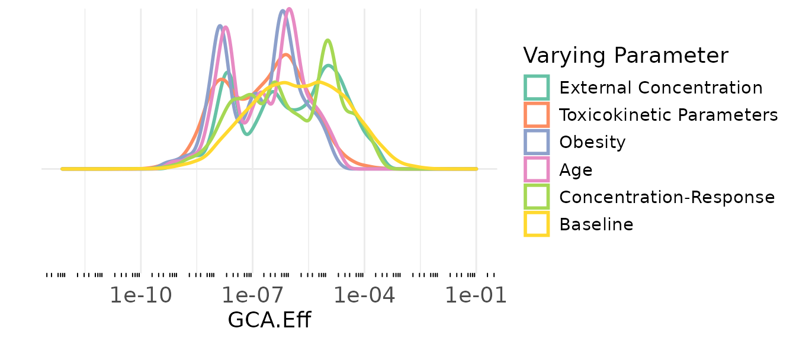
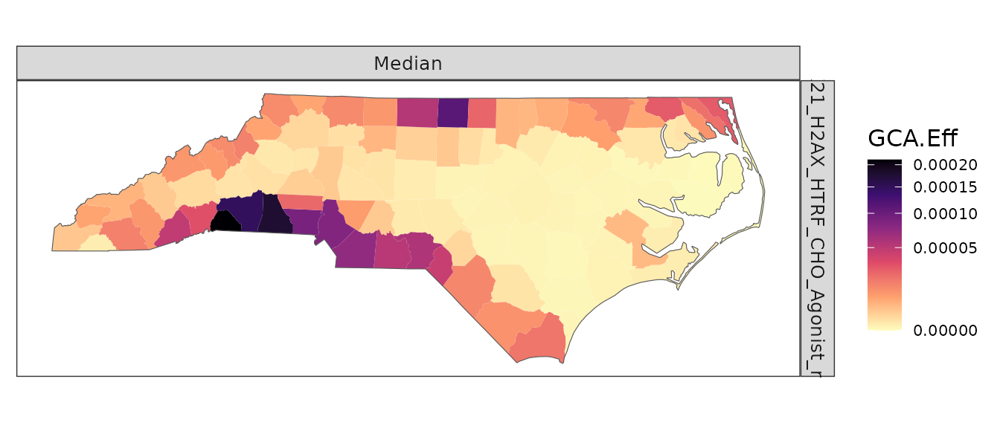
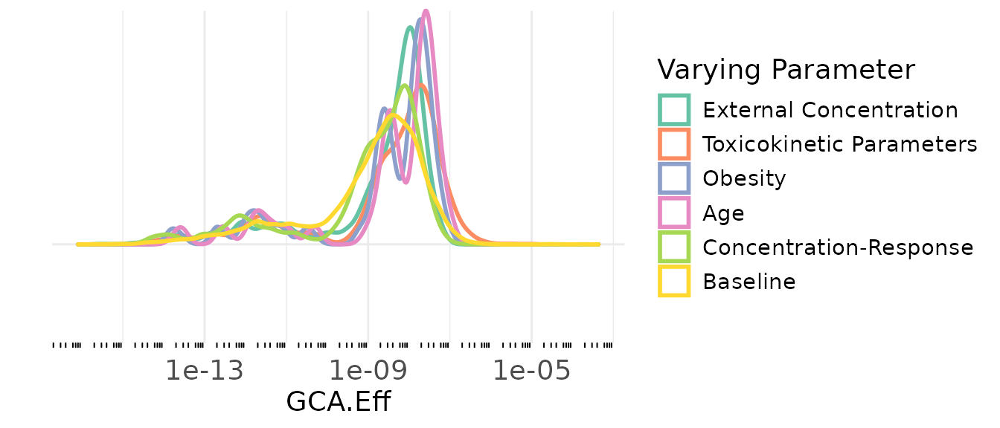
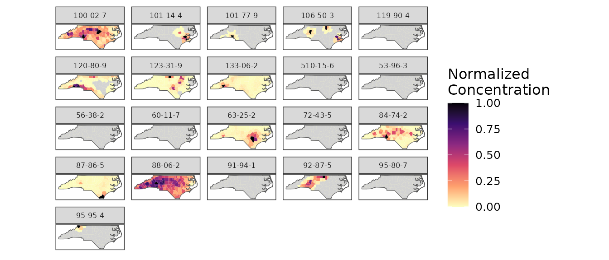

This vignette covers basic use of package functions. Package data,
geo_tox_data, is used throughout the examples and details
on how it was created can be found in the “GeoTox Package Data”
vignette.
NOTE: The sample size here is the size of the simulated population in each region. This is different than the sample size in the “package_data” vignette, which is used to generate
C_ssvalues for each chemical at specified age and weight combinations.
Analysis of single assay
Create GeoTox object, run simulations and computations
set.seed(2357)
geoTox <- GeoTox() |>
# Set region and group boundaries (for plotting)
set_boundaries(region = geo_tox_data$boundaries$county,
group = geo_tox_data$boundaries$state) |>
# Simulate populations for each region
simulate_population(age = split(geo_tox_data$age, ~FIPS),
obesity = geo_tox_data$obesity,
exposure = split(geo_tox_data$exposure, ~FIPS),
simulated_css = geo_tox_data$simulated_css,
n = n) |>
# Estimated Hill parameters
set_hill_params(geo_tox_data$dose_response |>
filter(endp == "TOX21_H2AX_HTRF_CHO_Agonist_ratio") |>
fit_hill(chem = "casn") |>
filter(!tp.sd.imputed, !logAC50.sd.imputed)) |>
# Calculate response
calculate_response() |>
# Perform sensitivity analysis
sensitivity_analysis()
geoTox
#> GeoTox object
#> Assays: 1
#> Chemicals: 5
#> Regions: 100
#> Population: 250
#> Data Fields:
#> Name Class Dim
#> age list(integer) 100 x (250)
#> IR list(numeric) 100 x (250)
#> obesity list(character) 100 x (250)
#> C_ext list(matrix) 100 x (250 x 21)
#> C_ss list(matrix) 100 x (250 x 21)
#> Computed Fields:
#> Name Class Dim
#> D_int list(matrix) 100 x (250 x 21)
#> C_invitro list(matrix) 100 x (250 x 21)
#> resp list(data.frame) 100 x (250 x 5)
#> sensitivity list(list) 5 x (100)
#> Other Fields: par, boundaries, exposure, css_sensitivity, hill_paramsPlot outputs
plot(geoTox)
plot(geoTox, type = "hill")
plot(geoTox, type = "sensitivity")
#> Picking joint bandwidth of 0.139
Analysis of multiple assay
Create GeoTox object, run simulations and computations
set.seed(2357)
geoTox <- GeoTox() |>
# Set region and group boundaries (for plotting)
set_boundaries(region = geo_tox_data$boundaries$county,
group = geo_tox_data$boundaries$state) |>
# Simulate populations for each region
simulate_population(age = split(geo_tox_data$age, ~FIPS),
obesity = geo_tox_data$obesity,
exposure = split(geo_tox_data$exposure, ~FIPS),
simulated_css = geo_tox_data$simulated_css,
n = n) |>
# Estimated Hill parameters
set_hill_params(geo_tox_data$dose_response |>
fit_hill(assay = "endp", chem = "casn") |>
filter(!tp.sd.imputed, !logAC50.sd.imputed)) |>
# Calculate response
calculate_response() |>
# Perform sensitivity analysis
sensitivity_analysis()
geoTox
#> GeoTox object
#> Assays: 13
#> Chemicals: 20
#> Regions: 100
#> Population: 250
#> Data Fields:
#> Name Class Dim
#> age list(integer) 100 x (250)
#> IR list(numeric) 100 x (250)
#> obesity list(character) 100 x (250)
#> C_ext list(matrix) 100 x (250 x 21)
#> C_ss list(matrix) 100 x (250 x 21)
#> Computed Fields:
#> Name Class Dim
#> D_int list(matrix) 100 x (250 x 21)
#> C_invitro list(matrix) 100 x (250 x 21)
#> resp list(data.frame) 100 x (3250 x 6)
#> sensitivity list(list) 5 x (100)
#> Other Fields: par, boundaries, exposure, css_sensitivity, hill_paramsPlot outputs
plot(geoTox)
#> Warning: Multiple assays found, using first assay 'APR_HepG2_p53Act_24h_up'
plot(geoTox, assays = "TOX21_H2AX_HTRF_CHO_Agonist_ratio")
plot(geoTox, type = "hill")
plot(geoTox, type = "sensitivity")
#> Warning: Multiple assays found, using first assay 'APR_HepG2_p53Act_24h_up'
#> Warning: Removed 93000 NA values
#> Picking joint bandwidth of 0.133
plot(geoTox, type = "sensitivity", assay = "TOX21_H2AX_HTRF_CHO_Agonist_ratio")
#> Picking joint bandwidth of 0.139Exposure Map
The exposure map is the same for both single and multiple assay analyses. The map shows the distribution of chemical exposure across regions for all chemicals, not just those used in a particular analysis.
plot(geoTox, type = "exposure", ncol = 5)
If other facet labels are present they can be specified using the
chem_label argument.
plot(geoTox, type = "exposure", chem_label = "chnm", ncol = 5)